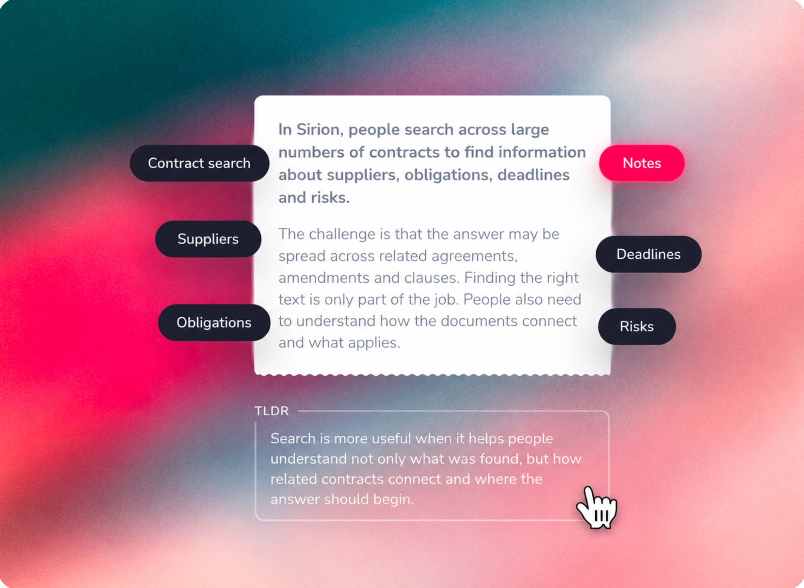
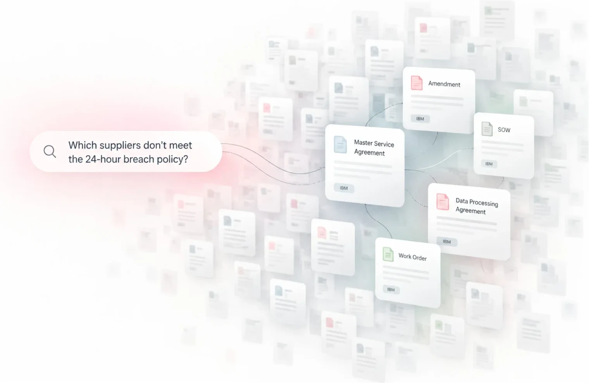
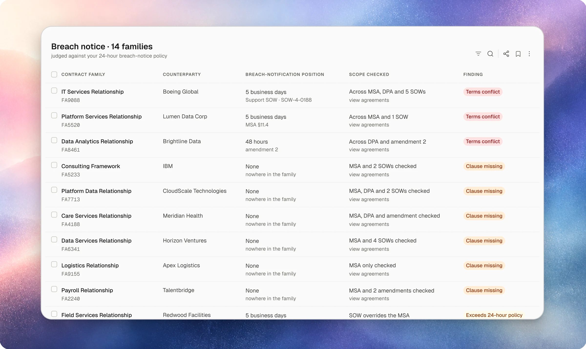
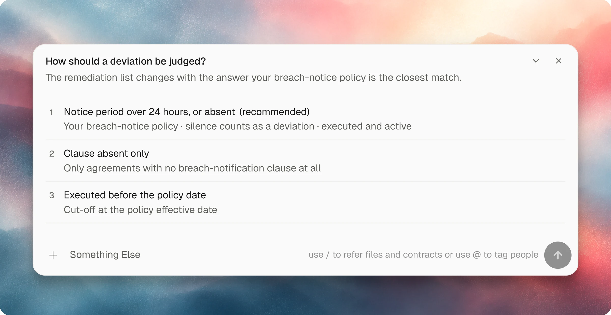
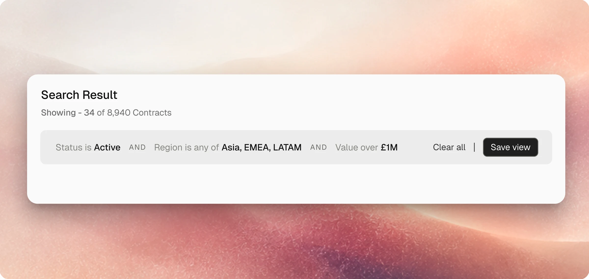
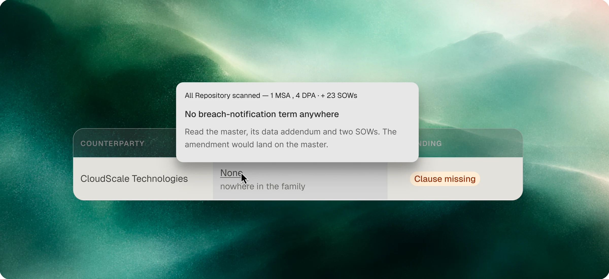
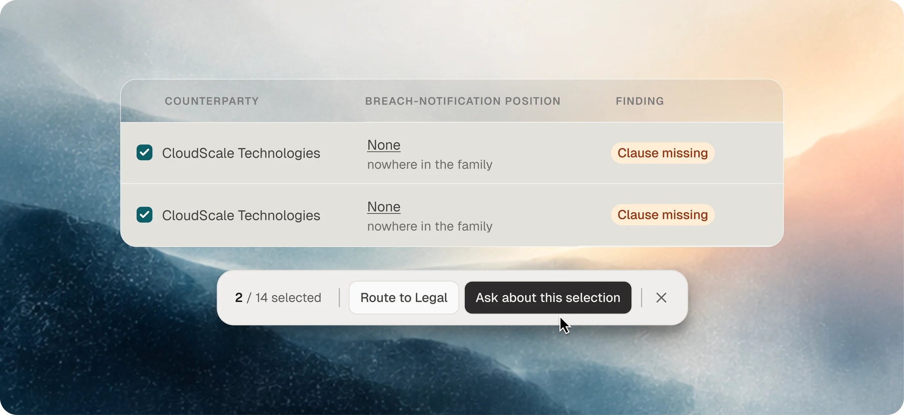

Did it find every piece of data that matters?

Sirion · Enterprise search · Partly shipped
Where should a search result actually land?
In Sirion, people search across thousands of contracts for suppliers, obligations, deadlines and risks.
The push for AI search came from the market. Once people got used to asking AI tools questions in plain language, they expected the same from their contracts. So search had to work from a question written the way people speak, not only from exact words.
We looked at the moments when people actually come to ask. The clearest was a policy change: a company decides suppliers must report a data breach within 24 hours, and someone needs to know which contracts don’t meet it. Others were a renewal date coming up, a new regulation, and a supplier the business was starting to worry about.
The hard part is that contracts don’t stand alone. One supplier might have a master agreement, several smaller ones, and amendments that change the original terms.
Finding the right text is one thing. Knowing which contract it belongs to, and how it relates to the others, is another.
I worked on this alongside a co-designer, PMs, engineers, legal engineers and legal experts, with feedback from IBM’s legal team, which showed us the problem at a much larger scale.
- My role
- Designer, alongside a co-designer
- Worked with
- PMs, engineers, legal engineers, legal experts, and feedback from IBM’s legal team
- Live today
- AskSirion search, charts and deal-level listing
- What’s next
- Generated columns, clause history and policy checks in development
01
The scale problem
One thing I understood from working with IBM’s legal team was the scale of information people were dealing with.
Search could find the right text in a document. But when a supplier has multiple related contracts, a list of matching documents doesn’t necessarily help someone understand the overall situation.

Take the breach-notice policy again. Someone asks which contracts don’t meet it.
The search might find different reporting periods across different documents. The person still needs to understand which terms actually apply.
That made us look beyond just finding the matching documents.
02
From a fixed hierarchy to intent-based results
The initial hypothesis
Contract information sits in five layers, from the widest to the smallest. A search result has to land on one of them.
- Counterparty
- Deal / family
- Contract
- Document
- Clause
Counterparty is the supplier. A deal is all their contracts together. A clause is one paragraph inside a document.
I wanted results to land on the deal, because contractual meaning often comes from the relationships between agreements, amendments and supporting documents, not from one matching document on its own. Engineering favoured document first, which matched how information was retrieved.
Engineering’s view
Document first
Follows how retrieval finds text. Good when the question is about one document. Weak when an amendment elsewhere changed the term.
My view
Deal first
Shows terms across related agreements. Good when the answer spans the deal. Slow when someone just needs one document.
The question was whether every search should follow the same result hierarchy.
What changed our thinking
Discussions with subject-matter experts challenged the assumption. Even when people search for the same contractual concept, they may be trying to do different things.
“What is the effective notice period for this deal?”
Needs a deal-level answer that accounts for the related agreements
“Which document contains the notice period?”
Needs document-level results with supporting evidence
Example questions, not quotes from the sessions.
Neither hierarchy was right every time. The right result depended on what the person was trying to do.
Translating intent into product behaviour
With engineering, we defined representative intent categories and the result behaviour for each, using questions from an existing question bank to shape the patterns.
| Representative query | Interpreted intent | Result level | Expected presentation |
|---|---|---|---|
| What is the effective notice period for this deal? | Understand the applicable contractual position | Deal / family | Computed answer, relevant contracts, supporting evidence |
| Which document contains the notice period? | Locate the source of a specific term | Document | Matching documents, clause references, source location |
| Which deals have conflicting payment terms? | Identify contractual inconsistencies | Deal / family | Deals with conflict indicators, relevant terms, supporting documents |
| Show contracts expiring in the next 90 days. | Find contracts matching a date condition | Contract | Contract listing with expiry date, counterparty and status |
| Which documents contain a governing law clause? | Locate clause evidence | Document | Matching documents with clause excerpts and citations |
| Show agreements where a required clause is missing. | Identify missing contractual provisions | Contract / Document | Relevant agreements, computed found / not-found status, evidence where available |
Representative intent-to-result patterns, not an exhaustive mapping of every question. Examples illustrate expected behaviour rather than verified agent outputs.
The design decision
We moved from a fixed result hierarchy to an intent-dependent presentation model.
Instead of forcing every query into a deal-first or document-first structure, we defined how search should adapt its result level, default columns, computed information and evidence presentation to the question being asked.
Part of this is already live. For data questions, AskSirion answers with charts and a table of the matching contracts.

This took the design work beyond the layout of search results into reusable interaction and behaviour patterns for the AI experience.
My contributionShaping the expected user-facing behaviour, in collaboration with the team.
EngineeringImplementing the agent and evaluating its performance against the question bank and golden dataset.
The structure of the answer should follow the user’s task, not simply the structure of the underlying data.
What remained to validate
The matrix set the expected behaviour, but it did not by itself prove that people could consistently find and correctly interpret their answers.
The next validation would check whether people could complete representative search tasks accurately, recognise an incorrect interpretation, and trace an answer back to the supporting contractual evidence.
03
When a question can mean more than one thing
Another problem was how the system understood what people were asking.
We initially had suggested follow-up questions, similar to early AI search tools. There was also a thumbs-up and thumbs-down option for feedback. Almost nobody used the thumbs.
But more importantly, suggesting the next question wasn’t solving the problem when the current question could mean different things.
For example, “Which contracts don’t meet the new 24-hour policy?” Does that mean contracts with a longer reporting period? Contracts where the clause is missing? Or older contracts signed before the new policy?
But how does the system know when a question is clear enough or not? That needed a rule, not a guess.
The rule:
I proposed a simple confidence check. Take a question about “contract value”.
For agent, that could mean total contract value and more
Someone asks“Show contract value by supplier”
“Contract value” could mean
Total contract valueCommitted valueMaximum valueEstimated annual spend
Option 1
Proceed – safe enough to assume
If meaning is much more likely, and getting it wrong would make little difference to the result.
Search agent makes its assumption visible
Using: Total contract value
Option 2
?Ask – too important to guess
Several meanings remain plausible, and choosing the wrong one could change the answer a lot.
Show a clarifying card
We explored a clarifying card where users could choose what they meant or write their own interpretation.
The idea wasn’t to ask users to clarify every search. When the question was clear, search could simply proceed. When different interpretations could change the result significantly, it made sense to ask first.

For more complicated searches, we also explored showing a plan before the system runs, so people could see what information it intended to check.
This connects to the next phase we’re building: clause history, checks against company policy and AI-generated columns. For example, a column could be generated in real time to show where contracts have conflicting terms, instead of relying only on data already stored in the table.
The important part is that a conflict should be visible, along with the supporting documents. The system shouldn’t simply make the legal decision for the person.
04
Making search results easier to understand and correct
Another part of the work was bringing search and filters together. Earlier, people often used advanced filters to narrow down the list.
We explored how someone could simply type what they wanted, and the system could turn that question into filter criteria. Those criteria appear as editable chips, so people can see how search understood their question.
We explored different versions of this, including a more natural sentence-like format. At rest, it reads like text. When someone interacts with a condition, it becomes editable.

We also spent time on empty results. Sometimes a search returns nothing because a filter is hiding the relevant contracts. Sometimes the correct answer really is that nothing matched.
We wanted the interface to explain that difference and help people make corrections without starting over.

After shipping, one observation was that fewer people seemed to go directly to advanced filters, and more started by typing what they wanted. We don’t have an exact measurement for that yet.
05
Where the work stands
AskSirion search, deal-level listings and charts for data questions are live.
We’re still building generated columns, clause history and policy checks. Some of the clarification and question-led interactions shown here are explorations, and the screens are from my prototype.
One thing I still want to validate is how we represent a finding at the deal level without making every contract in that deal appear to have the same issue.
That distinction matters because the result should help someone understand the situation, not create another misunderstanding.
06
What next
From a search result, people could go further and ask the AI to act on it. For example, “Draft a counter-negotiation document for these contracts” or “Show me a fix plan for these breach contracts.” Search is just the beginning. Many more AI actions on contracts are still being explored.
